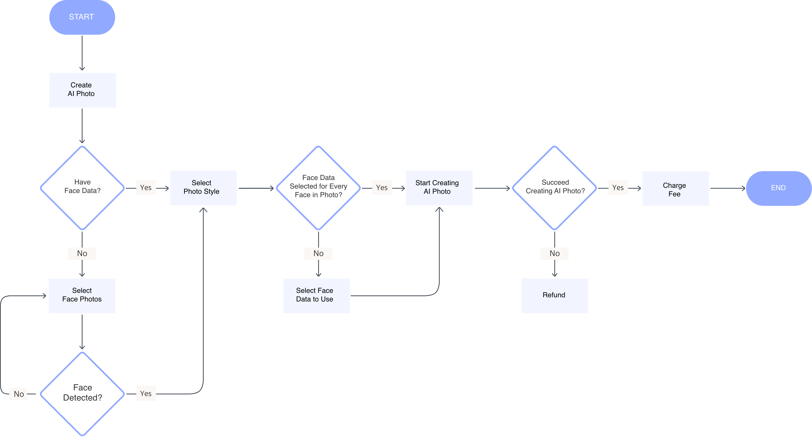
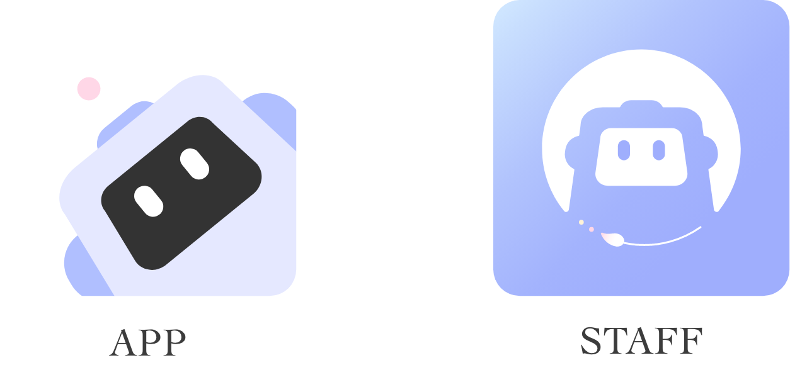
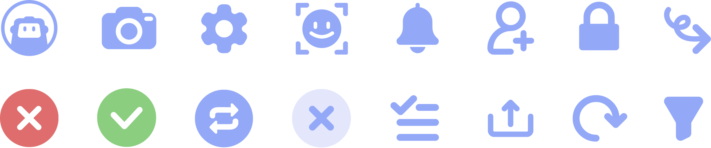
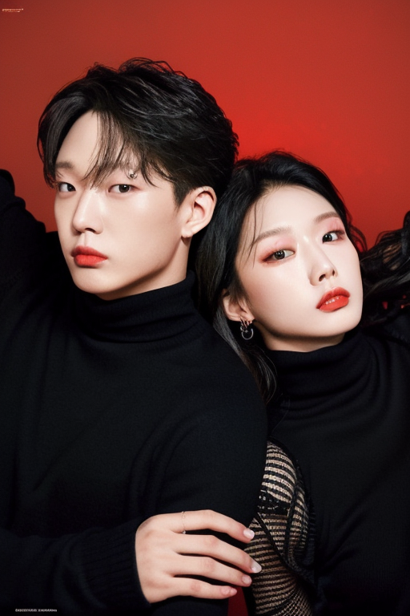
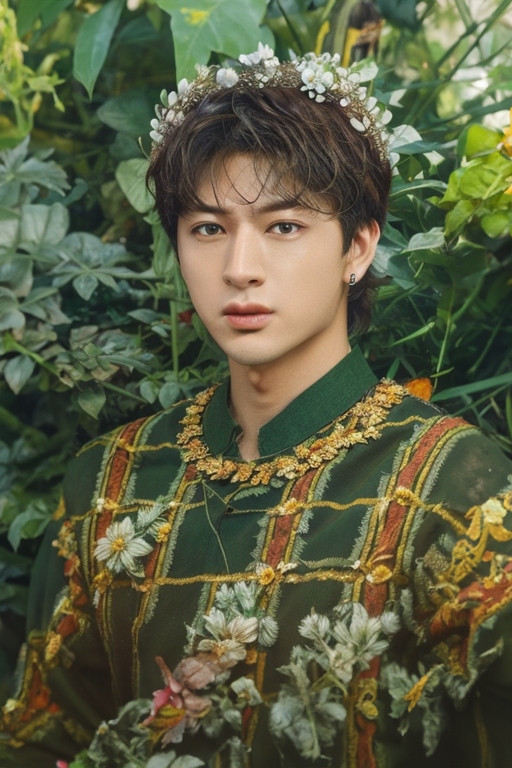

From zero to acquisition:
studio-quality portraits,
no prompt required.
Maroo AI is a mobile app that generates photoshoot-style pictures of you. We were a team of three: two engineers built it, and I owned everything else — research, strategy, product design, prompt engineering and launch.
People who want great photos,
not a new skill.
We didn't target AI power users. We targeted people who want the photo without learning photography or AI.
“I want nice photos for Instagram. Studios are expensive, and booking and getting ready is a hassle.”
“I’d love pre-wedding photos, but studio packages cost a fortune and take weeks to schedule.”
“I need a clean profile photo this week. I tried an AI app, but it never looked like me.”
They couldn’t make the AI do it. For someone new to AI, getting the photo they pictured meant clearing three walls:
In 2022, AI capability met a real appetite for photos.
Generative image AI exploded at the same time studio-photo culture was booming with younger users. But getting the one photo you actually wanted still meant writing, tweaking and re-running prompts — a barrier most people wouldn't climb.
How might we let people get the photo they pictured, without writing a prompt?
~1,000 templates, each one a prompt users never see.
Instead of asking users to handle AI's complexity, we solved it inside the service. Each template carries a pre-engineered prompt; the user just brings their face.
AI's complexity, reduced to a few taps.
From low-fi wireframes to the shipped flow: choose a template, map a face to each person in it, and add face data with an upload guide that keeps output quality high.

Soft and quiet, so the photos stay the hero.
An AI that edits your face can feel uncanny. I built a small system around a soft periwinkle palette, rounded shapes and a friendly robot mascot to make it feel playful and safe, and kept the UI quiet enough that every screen belongs to the generated photos.


After launch, users told us “good” meant two different things.
We launched with one global setting. Then reviews and support messages split in two directions: users in Europe and North America said the results no longer looked like them, while users in Asia asked to look a little prettier. Instead of picking one side, I set different generation values per region: true likeness for Western markets, slight idealization for Asian markets. Same templates, same three-tap flow, a different definition of “good” for each audience.
Acquired at launch — for what we built.


The best AI experience is the one users don’t notice.
Same core bet. Sharper focus.
Templates over prompts still holds. What’s changed is the technology around it — and what I now know about launching with zero users.